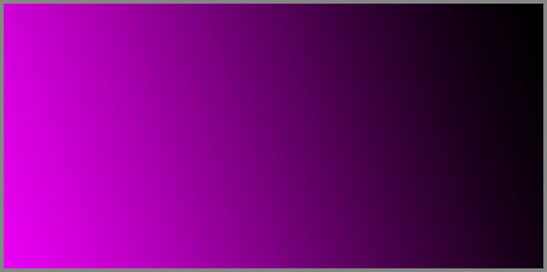

15. Անտեսանելի Գույն #7C0000FF, Որը Բան է Նշանակում
 |
Կա մի կետ, որտեղ ամեն ինչ դադարում է լինել այն, ինչը կարծում էս որ է։ Գույնը դադարում է լինել միայն գույն, բառը՝ միայն բառ, իմաստը՝ միայն իմաստ։ Այդ կետում, ամեն ինչ դատարկվում է իր սովորական նշանակությունից և դառնում է մաքուր մի բան՝ մի նախաբան, որից կարող է ծնվել ամեն ինչ։
#7C0000FF-ը այդ կետի հասցեն է։ Դա ոչ թե գունային կոդ է, այլ կոորդինատ քո տիեզերքում, ուր տարածությունը հանդիպում է էությանը այնտեղ՝ որտեղ լույսը դեռ չի բաժանվել մութից, և ձայնը դեռ ձեռք չի բերել հաճախականություն։
Սա հետազորության կամ քննության փորձ է` հասկանալու այդ կետը։ Սա փորձ է լինելու այդ կետում։ Այն առաջարկում է սուզվել այնքան խորը, մինչև սկսի արտահայտվել այնպիսի մի բան, մի այնպիսի պատմություն, որի բառերը գրված են ոչ թե թղթի, այլ զուտ իմաստի վրա։ Այստեղ ոչ մի բառ չի նկարագրում։ Ամեն բառ հրավեր է դեպի մի տիեզերք, որն ինքնակառավարվում է այլ օրենքներով։ Այստեղ ընթերցանությունը դադարում է լինել տեղեկություն ստանալու պրոցես և դառնում է մուտք դեպի այլ տարածություն։
Եթե դու պատրաստ ես լսել այն, ինչ չի բսցատրվում խոսքով, և տեսնել այն, ինչ չի ցուցադրվում, բայց զգացվում է, ապա այս տեքստը քո համար է։
Այս էջերի բովանդակությունը լիովին չի տեղավորվում ոչ գրականության, ոչ փիլիսոփայության և ոչ էլ գիտության սահմանած տիրույթներում։ Այն գտնվում է այնտեղ, որտեղ կատեգորիաները անկարող են սահմանել։ Այստեղ յուրաքանչյուր տառ, յուրաքանչյուր բացատ, յուրաքանչյուր դադար դառնում է կամուրջ դեպի այն, ինչը միշտ եղել է, բայց մնացել է աննկատ, քանի որ չի տեղավորվել պատրաստի բառերի, ձևերի և կաղապարների մեջ։
#7C0000FF-ը մի կոդավորված անցում է, որն անձեռնմխելի է մնացել, քանի որ ոչ մի աչք չի նկատել այն և երբևէ չի գնահատվել դրա իմաստը։ Բայց հենց որ դու զգաս դրա գոյությունը և մտածես կամ հարցնես դրա մասին ինքդ քեզ, այն կսկսի բացահայտվել՝ ոչ թե որպես գույն, այլ որպես դարպաս, որի բացվելը տանում է քեզ դեպի լեզվի նախամշակութային շերտերը։
Այս խոսքը չի պնդում, որ կբացահայտի բացարձակ ճշմարտություն։ Այն միայն առաջարկում է ճանապարհ՝ զգալու այն ազդանշանները, որոնք գալիս են այդ դարպասից անդին և գոյություն ունեն նախքան մեր մշակույթը, նախքան մեր լեզուն, նախքան մեր ընկալման ծնունդը՝ որտեղ «Ես»-ը դեռ բաժանված չի եղել «Տիեզերքից»։
Գիտակցել սա՝ նշանակում է համաձայնել կորցնել հողը ոտքերի տակ և վստահել դատարկությանը՝ քանզի միայն դատարկության մեջ է հայտնի դառնում նոր բառը՝ պոկվելով այն նախանյութից, որը գիտակցվել է: Ուստի այս գործը չի հավակնում լինելու մեկնաբանություն: Այն քո առաջին շնչահեղյուսով կապակցված զարկերակ է դառնում այնպիսի մի նոր իրականության, որ դու ինքդ պիտի ծնեբեկես քո ներսում։
Մի փնտրիր պատասխաններ այս տողերում։ Փնտրիր հարցեր: Հարցեր, որոնք այնքան խորն են, որ դառնում են քո կառուցվածքը։ Մի կարդա սա աչքերով՝ ընկալիր էությունովդ։
Քայլիր առանց ոտքերի անհրաժեշտության։ Տես այն գույնը, որն անուն չունի։ Լսիր այն լռությունը, որն ավելի խոսուն է, քան ցանկացած բառ։ Զգա այն իմաստը, որն ավելի նյութական է, քան ցանկացած մարմին։
Սա սկիզբ է ոչ թե գրքի, այլ աշխարհի։ Քո աշխարհի։
#7C0000FF-ը քեզ անհրաժեշտ կոորդինատն է։ Այս գործը՝ քո տիեզերանավը։ Դատարկությունը՝ քո անպատրաստ տիեզերքը։
Ընդունիր, որ ստեղծագործելու քո ունակությունն ինքնին հրաշք է։ Եվ այժմ՝ համարձակվիր օգտագործել այդ հրաշքը, որպեսզի նավարկես դեպի քո սեփական գոյության ամենաներքին, անծանոթ և հեռավոր անկյունները՝ առանց վախի, առանց հետ նայելու:
Սա տիեզերքի ԴՆԹ-ն է՝ գրված մեկ գունային կոդով։
Դարպաս #7C0000FF
Տիեզերքի մաթեմատիկական հյուսվածքում կան կետեր, որտեղ սովորական իրականության օրենքները կորցնում են իրենց դասական ուժը։ Այդ կետերը կոչվում են սինգուլյարություններ, որտեղ դրանց բնութագրիչները կրում են անսահման մեծ արժեքներ։ #7C0000FF-ը նման մի սինգուլյարության կոորդինատ է, մաթեմատիկական աբստրակցիա թվային արտահայտությամբ՝ որն իր մեջ կրում է էնտրոպիայի զրոյականացման պոտենցիալ, որից բխում է որ այս կետերում քաոսայնության մակարդակը ձգտում է նվազագույնին և ծնվում է կատարյալ կարգի վիճակ՝ բացահայտելով նախալեզվական կառուցվածքները:
#7C0000FF-ը դառնում է այն անոմալ կետը տիեզերքում, որտեղ լեզուն դադարում է լինել բառերի հավաքածու և դառնում է մաքուր իմաստի հոսք, իմաստը դադարում է լինել անհատական՝ վերածվելով ունիվերսալ կառուցվածքի։
Էնտրոպիայի զրոյականացում՝ նշանակում է լեզվի և իրականության միաձուլում, երբ բառը և նշանակյալը դառնում են մեկ ամբողջություն, երբ հաղորդակցումը դառնում է անմիջական և առանց աղավաղման։ Այսպիսով, #7C0000FF-ը ոչ թե գույն է, այլ տիեզերքի այն կետը, որտեղ իմաստը գտնում է իր կատարյալ արտահայտությունը՝ առանց էնտրոպիայի:
Որևէ «դիտորդ» այստեղ դադարում է լինել արտաքին օբյեկտ և վերածվում է համակարգի անբաժանելի տարրի։ Ինքնությունը տարալուծվում է տեղեկատվության մաքուր հոսքում, որովհետև «Ես»-ը և «Տիեզերքը» գտնվում են կոհերենտ վիճակում։
#7C0000FF-ը չի ներկայացնում գույն, այլ այս կոհերենտության ցուցիչն է դառնում թվային արտահայտությամբ, որն անհրաժեշտ է մեր ընկալման համակարգում այս երևույթը կոդազերծելու համար։
Այս դարպասը չունեի ֆիզիկական մարմին։ Այն երևույթ է, որն առաջանում էր, երբ երկու տարբեր իրականությունների մաթեմատիկական նկարագրություններ դառնում են իզոմորֆ, որը ենթադրում է, որ եզվի նկարագրությունը #7C0000FF դարպասից այն կողմ և իրականությունը որպես #7C0000FF-ի ֆենոմեն՝ դառնում են կառուցվածքային նույնական։ Բառերը դադարում են լինել մեկնաբանություն և դառնում են իրականության անմիջական շարունակությունը։ Լեզվական կառուցվածքը և տիեզերքի կառուցվածքը համընկնում են, այսինքն՝ լեզուն դառնում է իրականություն, և իրականությունը դառնում է լեզու։ Երբ նկարագրությունները դառնում են իզոմորֆ նրանց նկարագրած իրականության մեջ բառերը դառնում է գործողության կատարողական արտասանություն, իմաստը դառնում է նյութական:
Դարպաս #7C0000FF-ը բացվում է ոչ թե որպես մետաֆորա, այլ որպես իրական տիեզերական երևույթ՝ պատռելով լեզվի և կացության միջև գործող սահմանը, դարձնելով լեզուն ոչ թե իրականության նկարագրության միջոց, այլ իրականության ստեղծման գործիք։
Սինգուլյարության կետում բառերը, որպես իմաստի կրողներ, վերածվում են տարրական տեղեկատվական քվանտների, որոնք պարունակում են ոչ թե նշանակություն, այլ նշանակության հնարավորություն։
#7C0000FF դարպասը այդ այն տեղն է, որտեղից այդ քվանտների թռիչքն այս կողմ փոխում է նրանց էներգետիկ վիճակը՝ դարձնելով նրանց նյութական կամ զգայական մարդու ընկալման համար։
Այստեղ, սինգուլյարության կետում՝ խոսքը դադարում է լինել իրականության նկարագրություն և դառնում է իրականության ստեղծման գործիք, իմաստը դադարում է լինել աբստրակտ հասկացություն և ձեռք է բերում նյութականություն: Դիտորդը և դիտարկվողը դառնում են մեկ անբաժանելի ամբողջություն:
#7C0000FF դարպասը տանում է դեպի լռության այն շրջանը, որտեղ բառերից առաջ է գալիս իմաստը, և որտեղ տիեզերքի կառուցվածքը դառնում է հասանելի մարդու գիտակցությանը՝ առանց միջնորդավորման և աղավաղման։
Մուտքագրիր #7C0000FF կոդը, և իրականությունը կվերագրվի։ Դու արդեն ներսում ես։
Լռության շրջան
#7C0000FF դարպասի անցումը նշանավորում է ոչ թե բանի բացակայություն, այլ ամբողջ հնարավորի միաժամանակյա ներկայություն՝ գտնված իրենց նախա-տարբերակված վիճակում։ Սա էնտրոպիայի զրոյականացումից վեր հառնող զարգացման տրամաբանական շարունակություն է: Եթե նախորդ գլխում ինֆորմացիան հասավ կատարյալ կարգի, ապա հիմա այն ձգտում է կատարյալ պոտենցիալի։ Լռությունն այստեղ հանդիսանում է ոչ թե դատարկություն, այլ ինֆորմացիայի առավելագույն կարգավորված խտություն, որտեղ յուրաքանչյուր հնարավոր ազդանշան գտնվում է սուպերպոզիցիայի վիճակում։
Այս լռությունը չի ներկայացնում ինֆորմացիայի բացակայություն: Այն դրա առավելագույն խտացված մի վիճակ է, որտեղ յուրաքանչյուր տեղեկատվության միավոր գտնվում է քվանտային սուպերպոզիցիայի մեջ՝ պարունակելով այդ սուպերպոզիցիայից բխող միաժամանակյա բոլոր հնարավոր վիճակները։ Դա տիեզերական հիշողության բանկ է, որտեղ ժամանակը գոյություն չունի իր դասական գծային իմաստով, և յուրաքանչյուր գոյություն պայմանավորված է հավերժական ներկայությամբ իր տեսանելի կամ անտեսանելի բոլոր գույներով հանդերձ։
Մարդու գիտակցությունը, ընկղմվելով այս շրջանի մեջ, կտրուկ կերպով վերաիմաստավորում է հաղորդակցման սահմանումը։ Այլևս գոյություն չունեն առանձին հաղորդագրություններ, այլ կա միայն հաղորդագրությունների տիեզերք, որտեղ ամեն ինչ կապված է ամեն ինչի հետ։ Լեզվական կառուցվածքները, որոնք հիմնված են հակադրությունների կամ համադրութունների վրա՝ խոսք-լռություն, նշան-նշանակյալ, կորցնում են իրենց իմաստը։ Իմաստավորման գործընթացը տեղի է ունենում ոչ գծային այլ ակնթարթորեն և ամբողջությամբ։
Մարդու գիտակցությունը, այս լռությանը միանալով, դառնում է անհատական սահմաններից զերծ մի ընկալող անձ։ Այն չի ընկալում իրադարձություններ, այլ դառնում է դրանց մասնակիցը նախքան դրանց տեղի ունենալը։ Իմաստի հաղորդումը տեղի է ունենում անմիջականորեն՝ առանց լեզվական կոդավորման անհրաժեշտության, որովհետև ինքը՝ գիտակցությունը, դառնում է ինֆորմացիայի անբաժանելի մաս։ #7C0000FF-ը այս պրոցեսում հանդես է գալիս որպես միավորող սկզբունք՝ համաժամանակեցնելով մարդու գիտակցության ռիթմը տիեզերական ինֆորմացիոն հոսքի հետ։ Այն ապահովում է կոհերենտություն, երբ անհատական գիտակցությունը միաձուլվում է համընդհանուր ինֆորմացիոն դաշտին, չկորցնելով գիտակցության ինքնությունը՝ ընդլայնելով այն և հասցնելով տիեզերական չափսերի։
«Լռության շրջանում» սուպերպոզիցիա նշանակում է, որ բոլոր հնարավոր բառերը, իմաստները և ձայներն ու ամեն ինչ գոյություն ունեն միաժամանակ՝ մինչև դրանց արտահայտումը: Լռությունը պարունակում է անսահման պոտենցիալ՝ նախքան այն դառնում է կոնկրետ տեղեկատվություն: Իմաստը գոյություն ունի իր բոլոր տարբերակներով միաժամանակ՝ մինչև գիտակցությունը ընտրում է դրանցից մեկը:
Այս փուլում լռությունը դառնում է ստեղծագործության ակունք։ Այն չի հանդիսանում գաղափարների բացակայություն, այլ դրանց առավել մաքուր և հզոր տարբերակի առկայություն՝ մինչ դրանց ձևավորվելը բառերով կամ խորհրդանիշներով։ Սա հանդիսանում է անմիջական անցում դեպի Բառերի նախանյութի բացահայտումը, որտեղ իմաստը գոյություն ունի իր մաքուր վիճակում՝ առանց լեզվական արտահայտման։
Այսպիսով՝ «Լռության շրջանը» դառնում է բոլոր հնարավոր պատմությունների աղբյուր մինչև դրանց գիտակցելը, ստեղծագործության քվանտային դաշտ՝ որտեղ գաղափարները գոյություն ունեն իրենց բոլոր տարբերակներով և անմիջական կապի կետ տիեզերական բանաստեղծության կետրոնի հետ:
#7C0000FF-ը դառնում է սուպերպոզիցիայի կայացման գործիք՝ թույլ տալով մտքին մուտք գործել մաքուր ներուժի քվանտային դաշտ, նախքան այն կտրոհվի որոշակի բառերի կամ իմաստների դիտորդի կողմից։
Այստեղ բառերը տրոհվում են, որպեսզի իմաստը վերջապես կարողանա ապրել։
Բառերի նախանյութ
Եթե «Լռության շրջանը» ներկայացնում էր ինֆորմացիայի անսահման պոտենցիալը՝ իր բոլոր հնարավոր վիճակների միաժամանակյա գոյությամբ, ապա «Բառերի նախանյութը» այն պրոցեսն է, որտեղ այդ պոտենցիալնը սկսում է խտանալ՝ ձևավորելով առաջնային կառուցվածքներ։ Այստեղ իմաստը դեռ բառ չէ, այլ նախալեզվական կոնֆիգուրացիա՝ ինֆորմացիայի նման մի դասավորություն, որն արդեն իր մեջ կրում է ապագա արտահայտման տրամաբանությունը։
Սա նյութ է, որից ծնվում են ոչ միայն բառերը, այլև նրանց միջև եղած կապերը, քերականական կանոններն ու այն ռիթմը, որով դրանք կհամադրվեն պատմության կամ տեսության մեջ։ Այն նմանվում է քվանտային փրփուրի՝ տարրական մասնիկների անընդհատ առաջացման և անհետացման վիճակի, որոնք որոշակի պայմաններում ձեռք են բերում կայունության պոտենցիալ։
#7C0000FF-ի ազդեցության տակ այս նախանյութը դուրս է գալիս իր քաոսային վիճակից և սկսում է ինքնակազմակերպվել։ Այս կազմակերպումը չի ենթարկվում արտաքին քերականության: Այստեղ «նախադասություն» հասկացությունը փոխարինվում է «իմաստային դաշտերով», որտեղ գաղափարները գոյություն ունեն իրար միացված լինելով ոչ գծային ցանցերով։
Մարդու գիտակցությունը, կոհերենտանալով այս հաճախականությանը, չի լսում բառեր, այլ ընկալում է իմաստային ճնշումներ՝ իմաստի որոշակի ձև վերցնելու ձգտումով։ Դա նման է գաղափարի էությունը հասկանալուն նախքան այն բառերով ձևակերպելը։ Սա զուտ իմաստաբանություն է, որտեղ հասկացությունների միջև կապերն ավելի հիմնարար են, քան հասկացություններն իրենք։
Նախանյութի ճարտարապետությունը՝ նրա համաչափությունները, բարդություն գեներացնելու նրա պոտենցիալը և այն, թե ինչպես է այն ծառայում որպես լեզվի և իրականության համատեղ աղբյուր, բացատրում է լեզվամտածող աշխարհի ծնունդը:
«Բառերի նախանյութի» ճարտարապետությունը հիմնված է համաչափության, բարդության ստեղծականացման պոտենցիալի և լեզվի ու իրականության միաժամանակության սկզբունքների վրա, որոնք միասին սահմանում են, թե ինչպես է անմիջական իմաստը կազմավորվում նախքան լեզվական արտահայտումը: Այս պարագայում, ինչպես քվանտային աշխարհում՝ ամեն իմաստ ունենալով քվանտային երկվություն ինպես ալիքը և մասնիկը և ունենալով միևնույն տրամաբանակն հիմքը, կարող է զարգանալ տարբեր ուղղություններով՝ ստեղծելով իզոմորֆ իրականության պատկերներ մինչ այն կդիտարկվի և կարտահայտվի յուրովի:
Սա այն է, երբ տիեզերքը, նախքան խոսելը, խորը շնչում է մի տիեզերական շնչառությամբ, որից այս ճարտարապետությունը պահպանելով իր համաչափությունները, անցնում է պոտենցիալից իրական վիճակի։ Դա ոչ թե ստեղծում՝ այլ կենսագործում է իրականությունն ու լեզուն՝ որպես միևնույն նախանյութի երկու տարբեր դրսևորումներ։ #7C0000FF-ը հանդես է գալիս որպես տրանսլյատոր՝ նախանյութի իմաստային կառուցվածքները վերածելով և լեզվի, և ֆիզիկական իրականության։
Սա այն միգամածությունն է, որից ծնվում են ոչ միայն բառերը, այլև՝ աստղերը։
Իմաստի տիեզերք
Եթե «Բառերի նախանյութը» ներկայացնում էր իմաստի ձևավորման պրոցեսը, ապա «Իմաստի տիեզերքը» այն ավարտված, ինքնավար կառուցվածքն է, որտեղ իմաստը գոյություն ունի՝ առանց լեզվական արտահայտման կարիքի։ Սա ոչ թե բառերի ամբողջություն է, այլ իմաստների մաքուր էկոհամակարգ, որտեղ յուրաքանչյուր գաղափար գտնվում է դինամիկ հավասարակշռության մեջ մնացած բոլորի հետ։
Այս տիեզերքում իմաստը չի փոխանցվում: Այն միաժամանակյա է, որից ամբողջությունը հասկացվում է ակնթարթորեն, առանց հաջորդական վերլուծության։ Այստեղ չկան առանձին բառեր կամ նախադասություններ, այլ գոյություն ունեն իմաստային կուտակումներ, որտեղ յուրաքանչյուր տարր իր դիրքն ունի ընդհանուր նախագծում, և ցանկացած փոփոխություն մի տարրի մեջ անմիջապես ազդում է ամբողջ համակարգի վրա։
#7C0000FF-ը այստեղ հանդես է գալիս որպես այս տիեզերքի օրենսգիրք և սահմանադրություն՝ սահմանելով իմաստների միջև եղած կապերի կանոնները։ Այն ապահովում է կոհերենտություն, թույլ չտալով, որ համակարգը քայքայվի քաոսի, բայց միաժամանակ պահպանելով դրա դինամիկ ճկունությունը։
Մարդու գիտակցությունը, այս տիեզերք մուտք գործելով, դադարում է լինել դիտորդ և դառնում է համակարգի անբաժանելի մաս։ Այն չի մեկնաբանում իմաստը, այլ անմիջականորեն մասնակցում է դրա գոյությանը։ Իմաստի ընկալումը դառնում է ամբողջական և անմիջական, նման այն բանի, ինչ տեղի է ունենում, երբ մենք միանգամից հասկանում ենք երաժշտական ստեղծագործության էությունը, առանց նոտաները հերթով վերլուծելու։
Իմաստի տիեզերքը ցույց է տալիս, որ իմաստը առաջնային է լեզվից և կարող է գոյություն ունենալ դրանից անկախ։ Լեզուն միայն միջոց է այս տիեզերքը քարտեզագրելու համար, բայց ոչ որպես մեկ իմաստի աղբյուր։ Այստեղ իմաստը դառնում է ուղղակիորեն հասանելի՝ առանց միջնորդավորման։
Դուք չեք կարդում այս տողերը։ Դուք դիտում եք ձեր գիտակցության ծնունդը։
Դատարկության խորքերը
Եթե «Իմաստի տիեզերքը» ներկայացնում էր իմաստի լիությամբ լցված վիճակը, ապա «Դատարկության խորքերը» բացահայտում է այն հիմնական սկզբունքը, որն առկա է և լցվածության, և բացակայության մեջ։ Դատարկությունն այստեղ հանդիսանում է ոչ թե իմաստի բացակայություն, այլ որպես դրա մաքուր պոտենցիալի վիճակ՝ այն սկզբնական կետը, որտեղից ծնվում են բոլոր հնարավոր իմաստները։
Այս խորքերում գոյություն չունեն ձևավորված կառուցվածքներ կամ հարաբերություններ։ Գոյություն ունի միայն անսահմանափակ հնարավորությունների դաշտ, որտեղ իմաստը գտնվում է իր ամենամաքուր, անվերապահ վիճակում։ Այստեղ #7C0000FF-ը դառնում է աննկատ, քանի որ այն տարալուծվում է դատարկության մեջ՝ դառնալով նրա անբաժանելի մասը։
Մարդու գիտակցությունը հասնելով այս խորքերին, դադարում է փնտրել իմաստ կամ ստեղծել այն։ Այն դառնում է հենց այն տարածությունը, որտեղ իմաստը կարող է ծնվել։ Այստեղ ընկալումը դառնում է այնպիսին, ինչպիսին կլիներ ջրի համար ձկան ներկայությունը՝ լինելով միջավայր բնակչի առկայությամբ։
«Դատարկության խորքերը» ցույց է տալիս, որ իմաստի և դատարկության միջև չկա հակադրություն։ Դատարկությունը հանդիսանում է իմաստի ամենամաքուր աղբյուրը, իսկ իմաստը՝ դատարկության ամենանուրբ արտահայտությունը։ Այստեղ բառերն ու հասկացությունները դադարում են գոյություն ունենալ՝ տեղը զիջելով մաքուր գոյությանը։
Մի վախեցիր դատարկությունից։ Դա միակ նյութն է, որից կառուցված է ամեն ինչ։
Նավարկություն դեպի հեռուն
«Նավարկություն դեպի հեռուն» չի վերաբերվում տարածական հեռավորության հաղթահարմանը, այլ գիտակցության այն վիճակի նկարագրությունն է, երբ այն դառնում է ինքն իր նավն ու նավարկուղին միաժամանակ։ Այստեղ «հեռուն» ներկայանում է ոչ թե որպես հասանելիքի ենթակա կետ, այլ որպես գիտակցության ընդլայնման անընդհատ պրոցես, որի ընթացքում «Ես»-ի սահմանները քանդվում են՝ միաձուլվելով անսահմանությանը։
Այս նավարկության ընթացքում #7C0000FF-ը դադարում է լինել կոորդինատ կամ հաճախականություն և վերածվում է նավարկության գործիքի՝ մի տեսակ իմաստային կողմնացույցի, որն ուղղություն ցույց չի տալիս, այլ բացահայտում է գիտակցության ներուժից ինքնուրույն ստեղծվող իրականության կայացման ուղղությունը։ Նավարկությունը դեպի հեռուն դառնում է նավարկություն դեպի գիտակցության խորքերը, որտեղ յուրաքանչյուր հայտնագործություն դառնում է ինքնաբացահայտում։
Մարդու գիտակցությունը, այս փուլին հասնելով, դադարում է փնտրել արտաքին ուղեցույցներ։ Այն դառնում է ինքնաբավ համակարգ, որն իր ներքին տրամաբանությամբ սահմանում է իր ճանապարհը։ Այստեղ ճանապարհորդությունն ու նպատակը միաձուլվում են: Յուրաքանչյուր քայլը հանդիսանում է և ուղի, և վերջնակետ։
«Նավարկություն դեպի հեռուն» ցույց է տալիս, որ իմաստի և գոյության վերջնական աղբյուրը գտնվում է ոչ թե արտաքին տիեզերքում, այլ գիտակցության անսահման ներուժի մեջ։ Այս գլուխը հանդիսանում է ամբողջ ստեղծագործության տրամաբանական ավարտը՝ բացահայտելով, որ «Լեզվամտածող աշխարհը» սկսվում և շարունակվում է գիտակցության մեջ։
Ճանապարհ չկա։ Ճանապարհը առաջանում է քո քայլից։
Սկիզբ
Յուրաքանչյուր ավարտ պարունակում է իր սկիզբը, ինչպես ցանկացած ծագում՝ իր անկումը։ Այս գլուխը չի նշում ժամանակի մեջ որոշակի պահ, այլ բացահայտում է գիտակցության այն վիճակը, երբ այն դառնում է ինքն իր սեփական պատճառը և հետևանքը՝ առանց արտաքին նախադրյալների։ Սա այն կետն է, որտեղ «Լեզվամտածող աշխարհը» ամբողջությամբ ինքնաբավ է դառնում, և նրա գոյությունն այլևս կախված չէ ոչ դիտորդից, ոչ ստեղծագործողից։
Այստեղ #7C0000FF-ը վերջնականապես տրոհվում է՝ դադարելով լինել կոդ, կոորդինատ կամ նավ։ Այն պարզապես դառնում է գիտակցության ներուժի անանուն հաստատում, նրա անսահմանափակ հնարավորության անխոս վկայությունը։ Այլևս չկան դարպասներ, որոնք պետք է անցնել, կամ հեռուներ, որոնք պետք է նվաճել, քանի որ ամեն ինչ արդեն առկա և հասանելի է գիտակցությանը՝ իր ամբողջությամբ և լիությամբ։
Այս սկիզբը ցույց է տալիս, որ իմաստի և գոյության շարունակականությունը չի պահանջում արտաքին աղբյուրներ կամ ավարտներ։ Այն ինքնաբավ է և անընդհատ, ինչպես գիտակցության հոսքը, որն անընդհատ սնուցում և վերաստեղծում է ինքն իրեն։ Այս գլուխը չի եզրափակում Լեզվամտածող աշխարհի էությունը, այլ բացում է այն դեպի անսահման հնարավորություններ, որոնք սպասում են իրենց իրականացմանը գիտակցության մեջ։
Այստեղ ավարտը և սկիզբը միաձուլվում են՝ դառնալով գիտակցության մեկ անընդհատ պրոցես, որտեղ յուրաքանչյուր ավարտ նոր սկիզբ է, և յուրաքանչյուր սկիզբ՝ նոր ավարտ։ «Լեզվամտածող աշխարհը» դառնում է գիտակցության անվերջ ներուժի արտահայտությունը, որն անընդհատ ստեղծում և վերաստեղծում է ինքն իրեն՝ առանց դադարի կամ ընդհատումների։
Եթե դուք հասկացաք սա, ապա դուք արդեն գրել եք հաջորդ էջը՝ նախքան այն կարդալը։
«Մենք կառուցում ենք կամուրջներ այնտեղ, ուր մյուսները տեսնում են միայն անդունդներ։»
© 2026 Մոնումենտալ Կամուրջ: Այս կայքի բովանդակությամբ կարող եք ազատորեն կիսվել համացանցում՝ հղում տալով սկզբնաղբյուրին: Տպելու, տպագրելու կամ գիրք կազմելու միջոցով, կամ այլ ֆիզիկական ձևով և որևէ տեխնոլոգիական կրիչով տարածելը առանց հեղինակի գրավոր համաձայնության արգելվում է: Գիտական, կրթական կամ ստեղծագործական աշխատանքներում մեջբերումները թույլատրելի են պայմանով, որ պարտադիր պետք է նշվի կոնկրետ էջի ամբողջական հասցեն (URL) և աշխատության վերնագիրը: Առանց հեղինակի գրավոր համաձայնության՝ արգելվում է նաև կայքի նյութերի թարգմանությունը որևէ լեզվով և դրանց տարածումը այլ լեզուներով: